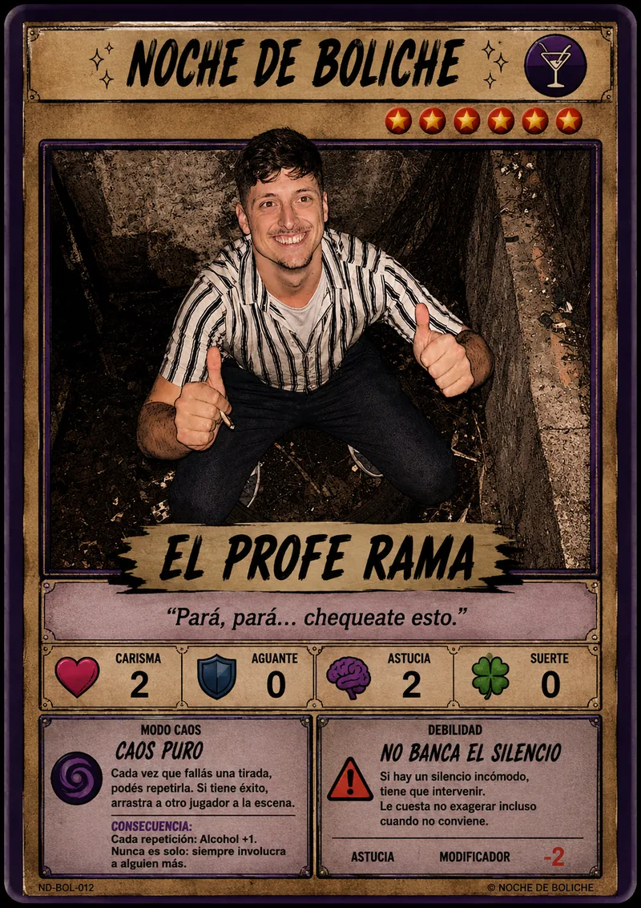
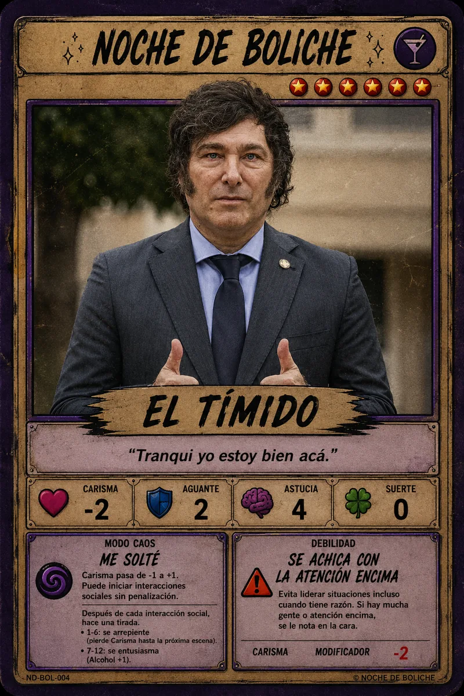
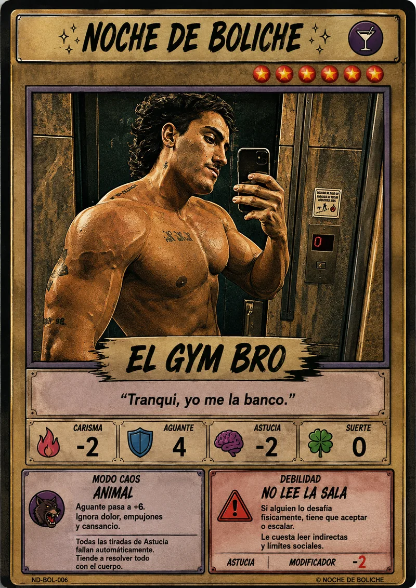

Entrás al departamento, mirás la mesa y no hay ni una botella de agua. En ese momento dudás que alguien se haya hecho cargo de comprar para tomar.

Rama FFacu
Nacho ⏳ 💃 Sofía 😤 El Hermano Mayor
Juli 🕶️ La VecinaAparece en el mapa para todos. Si es de levante o confrontación, después le arrancás el encuentro a un jugador desde la lista de abajo.
"Rama revisa la mesa con la seguridad de un perito y encuentra exactamente lo mismo que todos: nada. Ya hay tres personas mirándolo como si fuera su culpa."